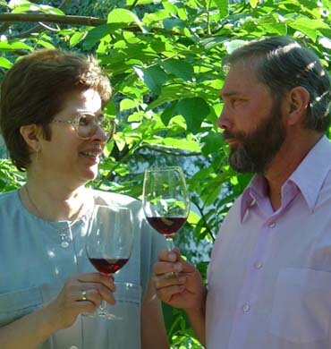

|
|
It might seem strange that neither my wife Ildiko, nor I are vine growers by profession, not even agronomists or horticulturists.
What have shown our way then, to hold and lead a vine field of 8 acres? The question is of course poetic, since for those who know us personally, it is obvious that the Vesztergombi family is one of the most ancient families in Szekszárd and our ancestors were all professional agrarians and wine experts as well.
Thus, I became familiar with this field, and also trained myself to be a part of it. Since my wife’s surname is Schiller, it was unavoidable for her to love vine or wine, so in 1999, we managed to establish the Remete Bor Co.
My favorite variety is the Kadarka, the wine that made Szekszard famous. However there were times when we had to cut it out, because it didn’t fit the general agricultural practice and theory in the communist system, but nowadays, it is gaining its popularity back.
We recultivated the inherited old yards and purchased some new ones intending to widen our assortment with the Olaszrizling, showing that Szekszárd is able to produce not only red, but white wine as well.
Our recent dream is a new processing unit. It already has its place and its detailed plan is also finished in my mind. Now, the work is ours...
|
|

|